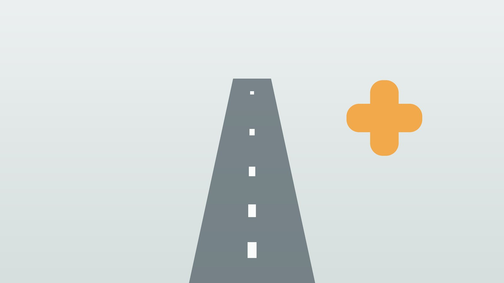

건강 칼럼 · 인천 교통사고 한의원
사고 직후보다 며칠 뒤가 더 아프다면, 교통사고 후유증 한방 치료

사고 후 이런 증상이 생겼나요?
- 사고 다음 날부터 목과 어깨가 뻣뻣해졌다
- 허리가 뻐근하고 앉았다 일어나기 힘들다
- 두통이나 어지럼이 생겼다
- 팔이나 다리가 저리다
- 잠을 설치고 차를 타면 긴장된다
- 겉으로 다친 곳은 없는데 온몸이 쑤신다
이 체크리스트는 진단 도구가 아니라 상담이 필요한지 가늠해 보는 참고용입니다.
후유증은 왜 늦게 나타나나요?
충돌 순간 목이 앞뒤로 급하게 꺾이며 근육과 인대가 늘어나는 편타손상(whiplash)은 사고 직후보다 하루 이틀 뒤에 통증과 뻣뻣함이 심해지는 경우가 많습니다. 사고 당시에는 놀람과 긴장으로 통증을 덜 느끼기 때문입니다.
사고 규모가 작아 보여도 몸이 받는 충격은 생각보다 클 수 있어, 통증이 가볍다고 넘기지 말고 초기에 상태를 확인해 두는 것이 회복과 기록 모두에 도움이 됩니다.
응급실이 먼저인 경우
- 머리를 부딪친 뒤 구토, 심한 두통, 졸림, 의식 변화가 있다
- 팔다리가 저리거나 힘이 빠진다
- 숨쉬기 힘들거나 가슴, 배가 심하게 아프다
- 뼈가 부러진 듯 붓고 움직이지 못한다
이런 증상이 있다면 한의원보다 응급실이나 정형외과, 신경외과에서 영상 검사를 먼저 받으세요.
한의학의 어혈(瘀血)
한의학에서는 갑작스러운 외상으로 혈이 제자리를 벗어나거나 흐름이 막혀 한곳에 정체된 상태를 어혈(瘀血)이라 합니다. 어혈의 통증은 한자리에 고정되어 찌르는 듯하고, 밤에 더 심해지며, 눌렀을 때 싫어하는 것이 특징이라고 보았습니다. 겉으로 멍이 들지 않아도 깊은 근육과 인대에 어혈이 생길 수 있다고 봅니다.
또 사고는 몸뿐 아니라 마음에도 충격을 줍니다. 한의학에서는 놀람이 기운을 흩뜨린다(驚則氣亂)고 하여, 사고 후 잠을 설치고 가슴이 두근거리며 차를 타기 두려운 것을 함께 다스려야 할 증상으로 봅니다.
나는 어떤 유형의 후유증일까?
1. 어혈(瘀血) 한자리가 찌르듯 아픈 유형
- 이런 분에게 많아요
- 충격이 집중된 부위가 있는 분
- 나타나는 모습
- 한곳이 고정되어 찌르듯 아프고 밤에 심하다
- 함께 오는 몸의 신호
- 눌렀을 때 통증, 멍
- 진찰에서 보이는 모습
- 혀에 어두운 반점
- 치료 방향
- 정체된 혈을 풀어 주는 방향 (당귀수산·계지복령환 계열)
- 오늘부터 해 볼 것
- 초기 2~3일은 냉찜질, 이후에는 온찜질을 하세요.
2. 근육 경직 뻣뻣하게 굳은 유형
- 이런 분에게 많아요
- 목과 허리가 전반적으로 굳은 분
- 나타나는 모습
- 움직이면 당기고 뻣뻣하며 아침에 심하다
- 함께 오는 몸의 신호
- 두통, 어깨 결림
- 진찰에서 보이는 모습
- 맥이 팽팽함
- 치료 방향
- 근육을 이완시키는 방향 (작약감초탕·갈근탕 계열)
- 오늘부터 해 볼 것
- 통증이 줄면 가벼운 스트레칭을 조금씩 시작하세요.
3. 심담허겁(心膽虛怯) 놀람과 불면이 남은 유형
- 이런 분에게 많아요
- 사고 장면이 자꾸 떠오르는 분
- 나타나는 모습
- 잠을 설치고 차를 타면 긴장되며 쉽게 놀란다
- 함께 오는 몸의 신호
- 두근거림, 악몽
- 진찰에서 보이는 모습
- 맥이 가늘고 빠름
- 치료 방향
- 놀란 마음을 진정시키는 방향 (온담탕·귀비탕 계열)
- 오늘부터 해 볼 것
- 잠들기 전 호흡으로 몸을 이완하세요.
4. 기혈허(氣血虛) 회복이 더딘 유형
- 이런 분에게 많아요
- 나이가 많거나 원래 체력이 약한 분
- 나타나는 모습
- 통증이 오래가고 쉽게 지친다
- 함께 오는 몸의 신호
- 무기력, 어지러움
- 진찰에서 보이는 모습
- 혀가 창백하고 맥이 약함
- 치료 방향
- 기혈을 채워 회복을 돕는 방향 (팔진탕 계열)
- 오늘부터 해 볼 것
- 충분히 자고 식사를 거르지 마세요.
자동차보험으로 한방 진료를 받을 수 있나요?
네, 교통사고로 인한 진료는 자동차보험으로 한의원에서도 받을 수 있습니다. 보험사에 사고 접수를 하고 접수번호를 알려 주시면 됩니다. 정형외과 등 다른 의료기관과 함께 진료받는 것도 가능하지만, 보험 처리 기준은 보험사와 상황에 따라 다를 수 있으니 내원 전에 보험사 담당자에게 확인하시는 것이 좋습니다.
한의원에서는 어떻게 진찰하나요?
- 사고 경위: 사고 방향, 충격 부위, 안전벨트 착용, 사고 직후 증상을 여쭙니다.
- 영상 검사 확인: 다른 기관에서 받은 엑스레이, MRI 결과를 함께 봅니다.
- 통증 부위 평가: 목·허리의 움직임 범위, 압통점, 저림의 위치를 확인하고 기록합니다.
- 수면과 마음: 잠, 두근거림, 운전에 대한 두려움도 함께 여쭙니다.
침·약침·한약 치료는 어떻게 하나요?
1. 침 치료
- 목: 풍지(風池), 견정(肩井), 목뼈 옆 협척혈
- 허리: 신수(腎俞), 대장수(大腸俞), 허리뼈 옆 협척혈
- 원위혈: 손등의 후계(後谿), 오금의 위중(委中)처럼 아픈 부위에서 먼 곳의 혈을 함께 씁니다.
2. 약침·초음파 가이드 약침
약침은 일반 약침과 초음파 가이드 약침을 모두 시행하며, 아픈 부위의 깊이와 주변 구조에 따라 진찰 후 골라 씁니다. 초음파 가이드 약침은 초음파 화면으로 바늘 끝을 확인하면서 놓는 방식입니다. 다친 근육과 인대를 초음파로 살펴 손상 부위를 확인하고, 화면을 보며 그 자리에 약침을 놓습니다. 통증이 집중된 부위의 압통점과 관련 경혈에 약침을 적용해 손상된 조직 주변의 염증과 근육 긴장을 완화합니다.
3. 한약
어혈 통증이 두드러지면 당귀수산 계열을, 놀람과 불면이 함께 있으면 마음을 안정시키는 처방을 씁니다. 자동차보험으로 처방할 수 있는 범위가 있어 내원 시 안내해 드립니다. 한약은 원장이 원내 탕전실에서 약재 선별부터 달이는 과정까지 직접 관리하며, 10일분씩 처방해 복용 경과를 보고 약재 구성과 양을 조절합니다. 아픈 자리는 초음파 가이드 약침과 추나로 다스리고, 통증이 오래가게 만드는 몸속의 기혈 순환과 장부 기능은 체질에 맞춘 한약으로 함께 살피면 통증 완화와 재발 관리를 함께 도모할 수 있습니다.
4. 추나·온열 요법
틀어진 관절과 굳은 근육에는 추나 요법과 온열 요법을 함께 시행하며, 급성기에는 자극을 조절합니다.
원장님이 네이버 블로그에 진료 이야기와 건강 정보를 꾸준히 올리고 있습니다. 더 많은 이야기는 블로그에서 확인해 보세요.
블로그 보기치료는 어떤 순서로 진행되나요?
- 사고 직후~1주 응급 신호를 확인하고 염증과 통증을 줄이는 데 집중합니다. 무리한 움직임은 피합니다.
- 2~4주차 통증이 줄면 움직임 범위를 넓히고 굳은 근육을 풉니다.
- 5주차 이후 남은 통증과 저림, 수면 문제를 관리하며 일상 활동으로 복귀합니다.
- 마무리 통증 변화를 기록으로 정리하고 재발을 막는 운동을 안내합니다.
기간과 횟수는 증상이 얼마나 오래되었는지, 동반 증상이 무엇인지에 따라 달라지며, 진찰 후 개인별로 안내합니다.
회복을 돕는 생활 관리
- 초기: 사고 후 2~3일은 무리한 운동과 장시간 운전을 피합니다.
- 찜질: 붓고 뜨거운 초기에는 냉찜질, 이후에는 온찜질을 합니다.
- 베개: 목을 받치는 낮은 베개로 잡니다.
- 기록: 통증 부위와 정도를 날짜별로 기록해 진료 때 알려 줍니다.
- 운전: 긴장이 크다면 짧은 거리부터 다시 운전해 봅니다.
다른 진료가 먼저인 경우
- 머리 부상 뒤 구토, 의식 변화, 심한 두통이 있으면 즉시 응급실로 가세요.
- 팔다리 저림과 힘 빠짐이 있다면 영상 검사를 먼저 받으세요.
- 가슴이나 배 통증이 심하다면 내부 장기 손상을 확인해야 합니다.
자주 묻는 질문 Q&A
- Q1. 사고 후 바로 한의원에 가도 되나요?
- 응급 신호가 없다면 바로 내원하셔도 되며, 필요하면 영상 검사를 먼저 받도록 안내합니다.
- Q2. 정형외과와 한의원을 같이 다녀도 되나요?
- 함께 진료받을 수 있습니다. 다른 기관 검사 결과가 있으면 가져와 주세요.
- Q3. 본인 부담금이 있나요?
- 자동차보험 진료는 본인 부담이 없는 경우가 많지만 과실 비율과 보험 조건에 따라 다를 수 있어 보험사에 확인하세요.
- Q4. 한약도 자동차보험으로 처방되나요?
- 보험 기준에 따라 처방할 수 있는 범위가 있어 내원 시 안내해 드립니다.
- Q5. 치료는 얼마나 받아야 하나요?
- 손상 정도에 따라 다르며 통증 변화를 주기적으로 점검하며 정합니다.
- Q6. 사고 후 운전이 무서워요.
- 놀람과 긴장도 후유증의 하나로 보고 함께 치료합니다.
- Q7. 겉으로 멀쩡한데 치료가 필요한가요?
- 근육과 인대 손상은 겉으로 보이지 않을 수 있어, 통증이 있다면 초기에 확인하는 것이 좋습니다.
- Q8. 합의 후에도 치료받을 수 있나요?
- 합의 조건에 따라 달라지므로 보험사와 먼저 확인하세요.
문원열 대표원장한의사 · 365스마일한의원
임상 경력 15년, 인천 서구 가정동에서 개원 후 10년째 진료하고 있으며, FCST 턱관절학회·연부조직학회·침도학회 등에서 활동합니다. 아픈 곳만이 아니라 증상의 원인을 찾아 진료합니다.
진료 안내
- 진료시간
- 평일 09:00~20:00 (점심시간 13:00~14:00, 접수 마감 19:30)
토·일·공휴일 09:00~15:00 (접수 마감 14:30) - 주소
- 인천광역시 서구 가경주로 46, 2층 (가정동)
인천2호선 가정중앙시장역 인근
영상으로 길 안내 보기 → - 주차
- 한의원 건물 바로 앞 1층 도원주차장
- 예약
- 예약 바로가기 또는 전화 예약
진료시간은 사정에 따라 바뀔 수 있으니 방문 전 전화로 확인해 주세요.
함께 읽으면 좋은 칼럼
건강 칼럼 전체 보기 →

참고 자료
- 국토교통부·건강보험심사평가원, 자동차보험 진료수가 기준
- 질병관리청 국가건강정보포털 — 원문
※ 이 글은 일반적인 건강 정보이며, 개인의 상태에 따라 치료 방법과 결과는 다를 수 있습니다. 정확한 진단과 치료는 진료를 통해 결정됩니다. 침·약침 시술 후 드물게 멍, 통증 등이 생길 수 있습니다.